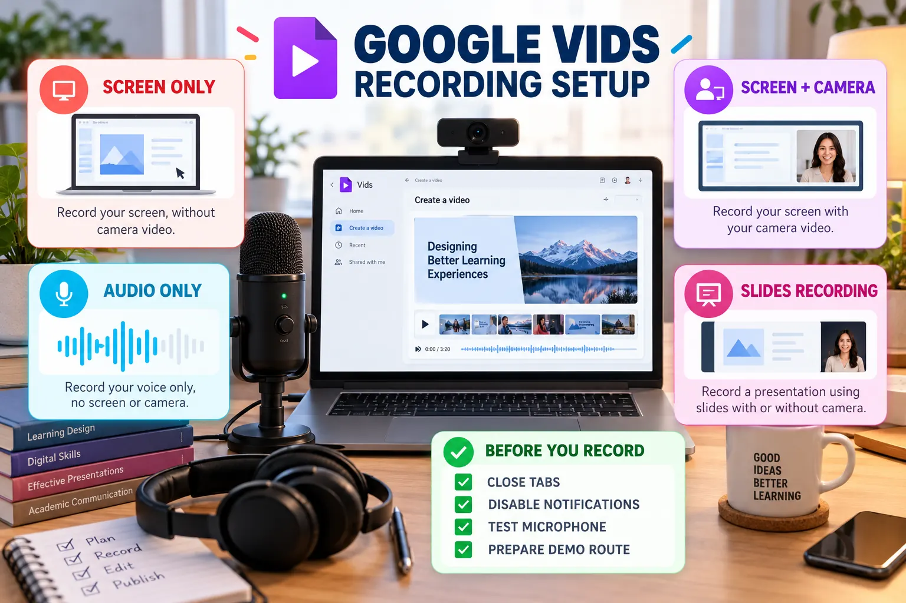

Recording Screen, Voice and Camera
Capture a clear demonstration while protecting privacy and reducing avoidable recording errors.

Recording modes
| Mode | Best use | Main risk |
|---|---|---|
| Screen only | Website, repository or prototype demonstration | Uncontrolled cursor movement |
| Screen + camera | Personal project presentation | Presenter window covers evidence |
| Audio only | Clean voice-over | Narration becomes detached from visuals |
| Camera only | Opening or reflection | Too much talking without evidence |
| Slides recording | Structured explanation | Reading slides instead of explaining |
Before recording
Prepare the demo route
Open every required page in the correct order and rehearse the exact interactions.
Protect private information
Close unrelated tabs, hide notifications and remove personal records, tokens and private URLs.
Test the equipment
Confirm the selected microphone, camera, recording area and audio level.
Optimise the screen
Use readable browser zoom, remove clutter and position the pointer away from important text.
During recording
- Record short sections that can be rearranged.
- Pause briefly before and after each spoken segment.
- Move the pointer deliberately and avoid circles or rapid movement.
- Do not scroll while explaining a different part of the screen.
- Repeat a section when a factual or pronunciation error occurs.
- Use headphones when they reduce echo or feedback.
Privacy check: never record passwords, student records, private email messages, API keys, browser autofill suggestions or confidential project data.